ENGINE UNIT > INSPECTION |
| 1. INSPECT EXHAUST MANIFOLD SUB-ASSEMBLY LH |
Using a precision straightedge and feeler gauge, measure the warpage of the contact surface between the cylinder head and exhaust manifold.
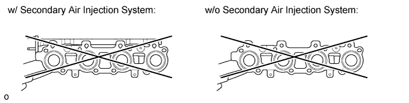
| 2. INSPECT EXHAUST MANIFOLD SUB-ASSEMBLY RH |
Using a precision straightedge and feeler gauge, measure the warpage of the contact surface between the cylinder head and exhaust manifold.
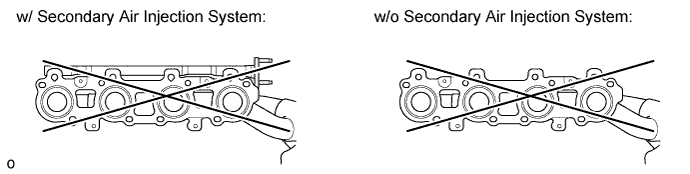
| 3. INSPECT CYLINDER HEAD SET BOLT |
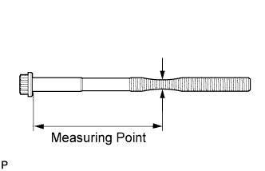 |
Using a vernier caliper, measure the thread outside diameter of the bolt.
| Item | Specified Condition |
| Intake side | 82 mm (3.23 in.) |
| Exhaust side | 86 mm (3.39 in.) |
| 4. INSPECT CAMSHAFT |
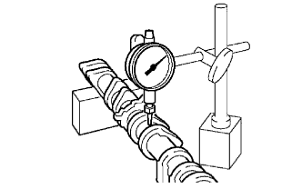 |
Inspect the circle runout.
Place the camshaft on V-blocks.
Using a dial indicator, measure the circle runout at the center journal.
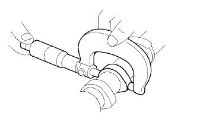 |
Inspect the cam lobes.
Using a micrometer, measure the cam lobe height.
| Item | Specified Condition |
| Intake | 42.61 to 42.71 mm (1.6776 to 1.6815 in.) |
| Exhaust | 42.63 to 42.73 mm (1.6783 to 1.6823 in.) |
| Item | Specified Condition |
| Intake | 42.46 mm (1.6717 in.) |
| Exhaust | 42.48 mm (1.6724 in.) |
Inspect the camshaft journals.
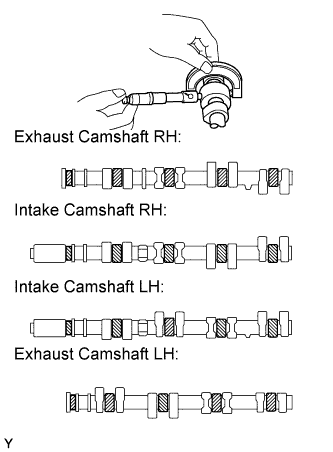 |
Using a micrometer, measure the journal diameter.
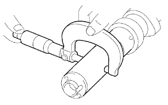 |
Using a micrometer, measure the journal diameter for the camshaft timing tube.
| 5. INSPECT CAMSHAFT TIMING TUBE ASSEMBLY |
 |
Using a micrometer, measure the journal diameter.
Install the camshaft timing tube to the camshaft (Click here).
Check the lock of the camshaft timing tube.
Check that the camshaft timing tube is locked.
 |
Release the lock pin.
Clean the camshaft timing tube journal with non-residue solvent.
Wrap tape around the entire journal to block the 4 oil holes as shown in the illustration.
Open a hole in the tape at 2 places, one in the retard side oil hole and one in the advance side oil hole as shown in the illustration.
 |
Apply approximately 200 kPa (2.0 kgf/cm2, 29 psi) of air pressure to the 2 open oil holes (the advance side oil hole and the retard side oil hole).
 |
Check that the camshaft timing tube revolves in the advance direction when reducing the air pressure applied to the retard side oil hole.
When the camshaft timing tube reaches the most advanced position, release the air pressure from the retard side oil hole and advance side oil hole, in that order.
Check for smooth rotation.
Apply 60 kPa (0.6 kgf/cm2, 8.7 psi) of air pressure to the retard side oil hole to release the lock pin.
Turn the camshaft timing tube within its movable range (21°) 2 or 3 times, but do not turn it to the most retarded position. Make sure that the camshaft timing tube turns smoothly.
Check the lock in the most retarded position.
Confirm that the camshaft timing tube is locked at the most retarded position.
Remove the camshaft timing tube (Click here).
| 6. INSPECT CAMSHAFT GEAR SPRING |
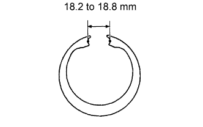 |
Using a vernier caliper, measure the gap distance of the gear spring.
| 7. INSPECT FAN BRACKET SUB-ASSEMBLY |
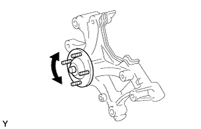 |
Check that the fan bracket turns smoothly by turning it.
If necessary, replace the fan bracket.
| 8. INSPECT TIMING BELT |
Visually check the timing belt for excessive wear, frayed cords, etc.
If necessary, replace the timing belt.
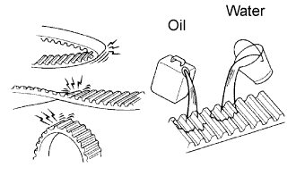 |
| 9. INSPECT TIMING BELT TENSIONER ASSEMBLY |
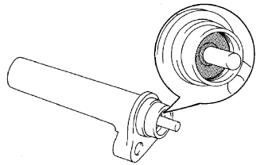 |
Visually check the seal portion of the tensioner for oil leakage.
If leakage is found, replace the timing belt tensioner assembly.
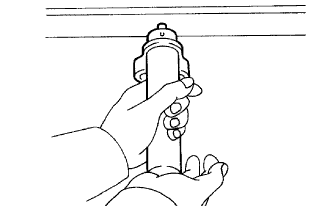 |
Hold the tensioner with both hands and push the push rod strongly as shown to check that it does not move.
If the push rod moves, replace the timing belt tensioner assembly.
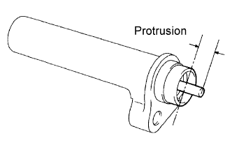 |
Measure the protrusion of the push rod from the housing end.
| 10. INSPECT VALVE LIFTER |
 |
Using a micrometer, measure the lifter diameter at a position 12.3 to 12.7 mm (0.484 to 0.500 in.) from the top surface.
 |
Using a caliper gauge, measure the lifter bore diameter of the cylinder head.
Subtract the lifter diameter measurement from the lifter bore diameter measurement.
| 11. INSPECT CYLINDER HEAD SUB-ASSEMBLY |
 |
Using a precision straightedge and feeler gauge, measure the surfaces contacting the cylinder block and manifolds for warpage.
| Item | Specified Condition |
| Cylinder block side | 0 to 0.05 mm (0 to 0.00197 in.) |
| Intake manifold side | 0 to 0.08 mm (0 to 0.00315 in.) |
| Exhaust manifold side | 0 to 0.08 mm (0 to 0.00315 in.) |
 |
Using a dye penetrant, check the combustion chamber, intake ports, exhaust ports and cylinder block surface for cracks.
If the cylinder head is cracked, replace it.
| 12. INSPECT CYLINDER BLOCK SUB-ASSEMBLY |
 |
Clean the cylinder block.
Using a gasket scraper, remove all the gasket material from the top surface of the cylinder block.
Using a soft brush and solvent, thoroughly clean the cylinder block.
 |
Using a precision straightedge and feeler gauge, measure the surfaces contacting the cylinder head and main bearing cap for warpage.
 |
Visually check the cylinder for vertical scratches.
If deep scratches are present, rebore all 8 cylinders and replace all 8 pistons. If necessary, replace the cylinder block.